Note
This page is a reference documentation. It only explains the class signature, and not how to use it. Please refer to the user guide for the big picture.
nidl.losses.CoMMLoss¶
- class nidl.losses.CoMMLoss(temperature=0.1, weights=None)[source]¶
Bases:
ModuleCoMM loss [1], multimodal InfoNCE with missing modalities.
For two augmented views
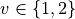
of each sample, let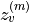
be the embedding of modality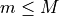
, and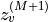
the multimodal embedding, which fuses all the modalities. The loss aligns each embedding of one view with the multimodal embedding of the other view: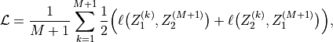
where
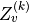
gathers the embeddings of the samples
of the batch, and
samples
of the batch, and  is the InfoNCE loss [2] with temperature
is the InfoNCE loss [2] with temperature
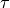
on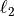
-normalized embeddings. In ,
, 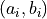
is a positive pair, and the other samples of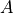
and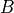
are the negatives:
With missing modalities, the term of modality
 only uses the
samples having it (both in
only uses the
samples having it (both in 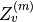
and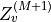
), and is skipped if they are fewer than two.Adapted from https://github.com/Duplums/CoMM.
- Parameters:
- temperaturefloat, default=0.1
Scale logits by the inverse of the temperature.
- weightssequence of float or None, default=None
Optional weight of each term (one per modality, then the multimodal term). The loss is then the mean of the weighted terms,
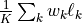
, over the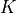
computed terms (the weights are not normalized).
References
[1]Benoit Dufumier, Javiera Castillo-Navarro, et al., “What to align in multimodal contrastive learning?”, ICLR 2025.
[2]Aaron van den Oord, Yazhe Li, Oriol Vinyals, “Representation Learning with Contrastive Predictive Coding”, arXiv 2018.
- __init__(temperature=0.1, weights=None)[source]¶
Initialize internal Module state, shared by both nn.Module and ScriptModule.
- forward(z1, z2, present=None)[source]¶
Forward implementation.
- Parameters:
- z1list of torch.Tensor
The M + 1 embeddings of the first view, each of shape (batch_size, n_features): one per modality, then the multimodal one.
- z2list of torch.Tensor
The M + 1 embeddings of the second view.
- presenttorch.Tensor or None, default=None
Bool mask of shape (batch_size, M), True where a sample has a modality. If None, all the modalities are present.
- Returns:
- outputsdict
The CoMM loss (“loss”), the mean SSL accuracy (“ssl_acc”), and the loss and accuracy of each computed term k (“ssl_loss_k”, “ssl_acc_k”), from 0 to M, M being the multimodal term.